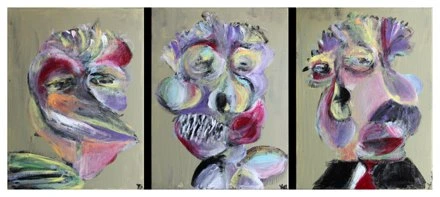
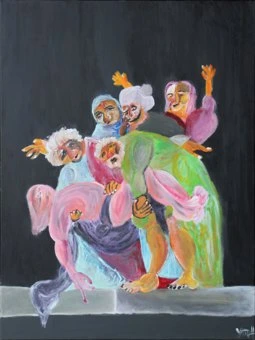
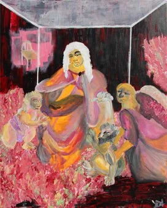
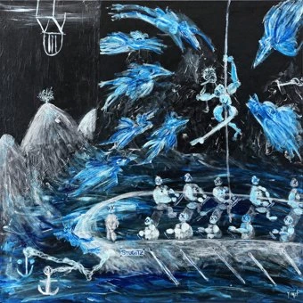
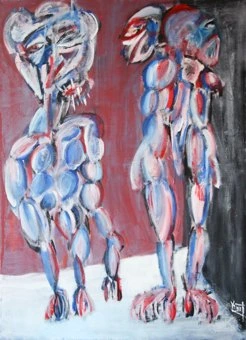
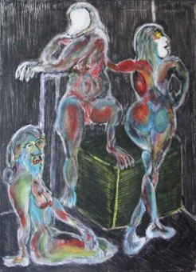

Yerel metin/seçki taslağı ·Instagram değiştirilmedi
Profilin verdiği sözü
eserler tamamlasın.
Bio ·English
Paintings of unstable bodies and familiar spaces.
Works, studio decisions and the archive.
Selected works ↓Bağlantı, yayın sırasında gerçekten açılan güncel seçkiye gitmeli. Aşağıdaki yerel seçki bir gözden geçirme materyali; internet üzerinde yayımlanmış yeni sayfa değil.
Sabit içeriklerin görevi
P001 kişisel mekân/anlatı girişi. P003 geldiğinde tarihli arşiv karşılığı. P005 geldiğinde beden/yüz incelemesi. P030 yayımlandıktan sonra genel künyeli seçki, P003’ün sabit yerini alabilir. Böylece yapılmamış bir gönderi ilk günden mevcutmuş gibi planlanmaz.
Üç sabitin görevi: pratiğe giriş, somut karar/inceleme ve iş gövdesine erişim. 4 Kasım 2026 tarihinde herkese açık profil okundu; üç görünür gönderi grid önizlemesine eklendi. Hesabın mevcut sabitleri ve arşivin tamamı bu görünümden kesinleşmiyor. Önerilen sabit sırası hesapta uygulanmadı; gerçek yayın önizlemesinde kontrol edilmeli.
Selected paintings
Bodies, scenes and spaces across the current work and the archive. Titles, materials and dimensions identify each painting; availability is not stated.



Painstaking
Painstaking
2026 · Acrylic on canvas
Triptych · 3 panels, each 40 × 30 cm (h × w).



Gxd is AFK, We banned it
Gxd is AFK, We banned it
2026 · Acrylic on canvas
80 × 60 cm (h × w).

Virgil on Virtual Cage (final_final-finalV9)
Virgil on Virtual Cage (final_final-finalV9)
2026 · Acrylic on canvas
100 × 80 cm (h × w).


articulo attack on mandarin
articulo attack on mandarin
2026 · Acrylic on canvas
80 × 80 cm (h × w).


ciao capo, sono squalo
ciao capo, sono squalo
2020 · Acrylic on canvas
90 × 65 cm (h × w).

caprocorn sister: war, plague, earthquake
caprocorn sister: war, plague, earthquake
2020 · Acrylic on canvas
90 × 65 cm (h × w).